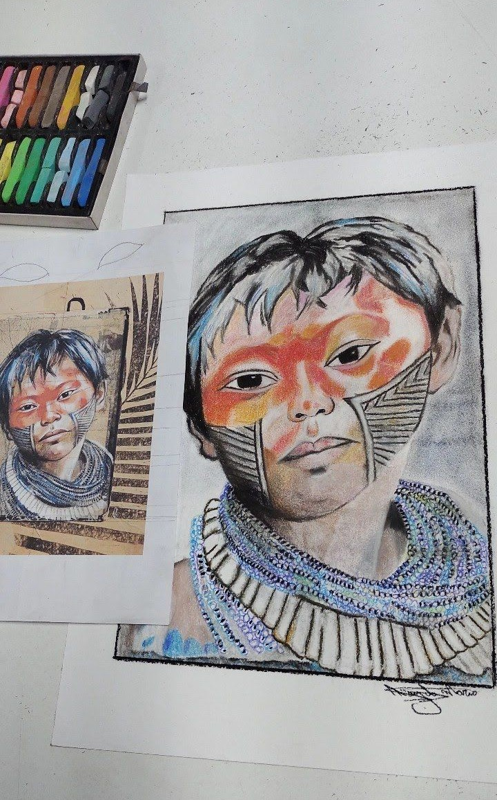
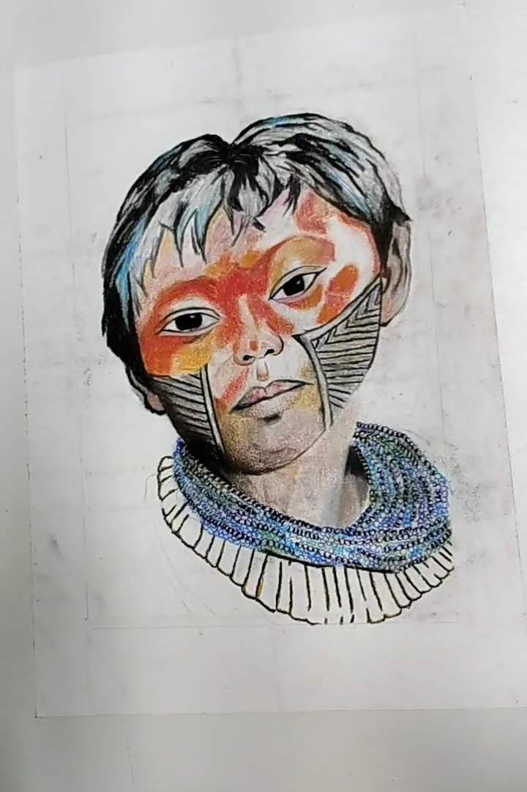
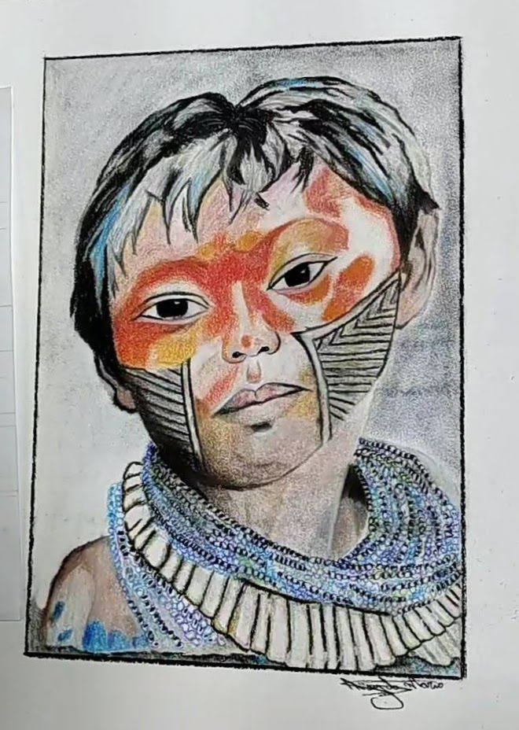
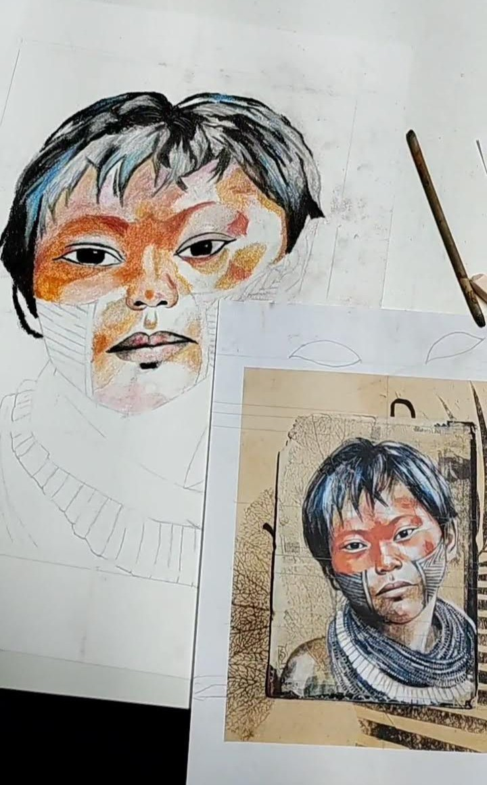
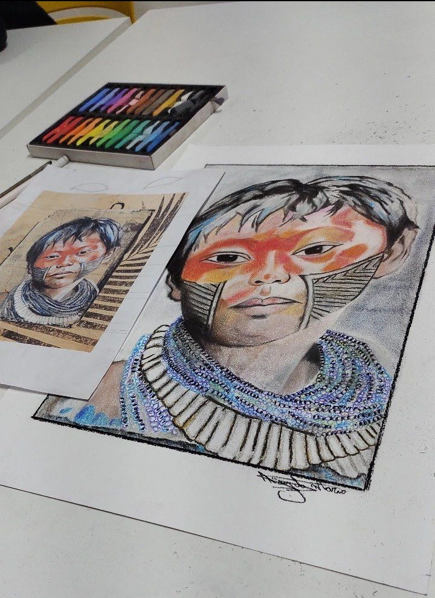
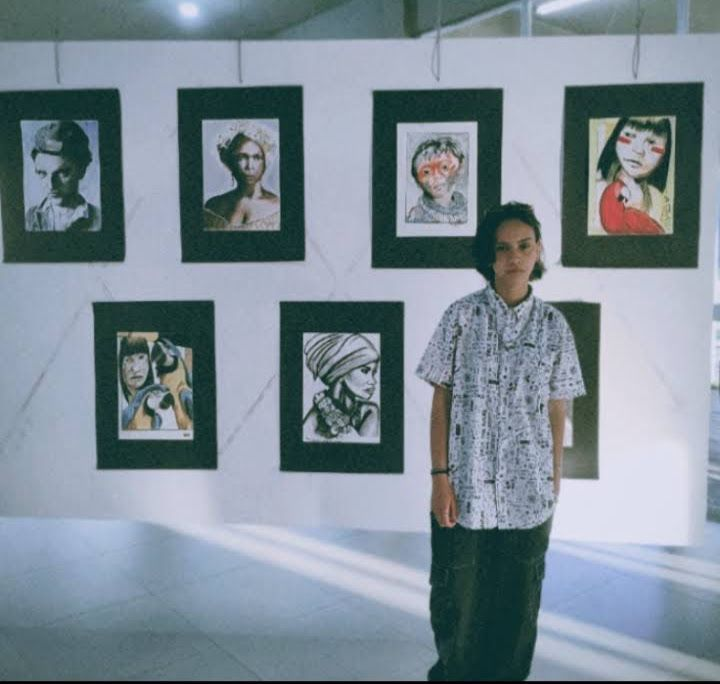

Exposição de Arte 2023
Raízes Vermelhas.
Esta obra é um convite a mergulhar na ancestralidade dos povos indígenas que formam a base viva do Brasil. Por meio da recriação artística de uma imagem indígena, a peça celebra a dignidade, a história e a presença vibrante dessas comunidades, ressaltando sua importância fundamental para a identidade brasileira.“Raízes Vermelhas” busca despertar uma reflexão sobre memória, respeito e valorização das culturas originárias, trazendo à tona a energia que mantém vivas tradições milenares e o vínculo profundo entre o homem e a terra. A obra foi criada utilizando somente giz pastel, e foi exposta no dia 24 de setembro de 2023, na Casa da cultura em Telêmaco Borba, Na exposição da Despertar.
     